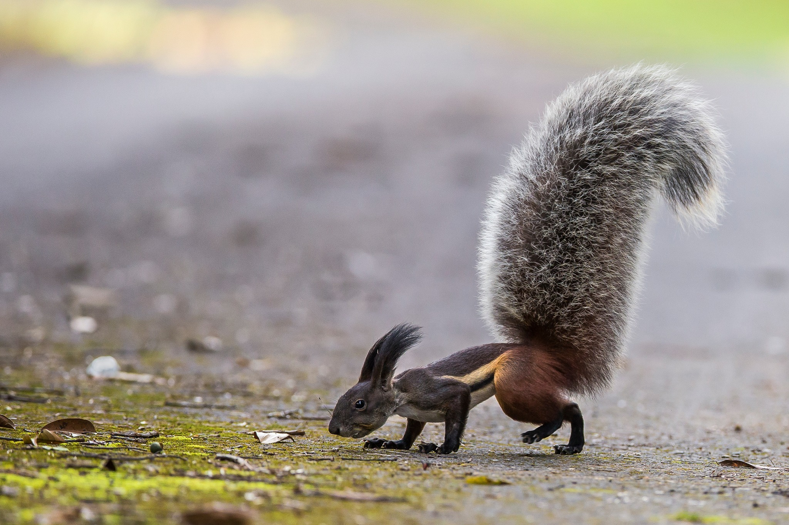
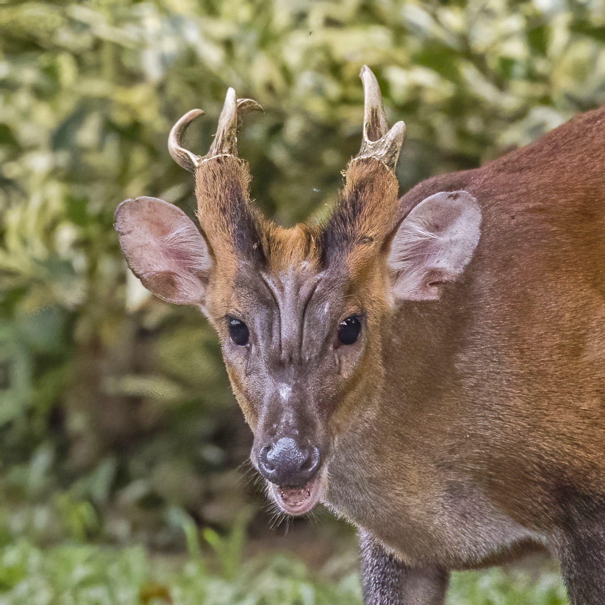

This is an example of a very interesting squirrel, the Tufted Ground Squirrel

Only found on the small island of Borneo, an interesting fact from Animalia is that
Rheithrosciurus(Tufted ground squirrel) is noted for having the largest known tail to body size ratio of any mammal, with the volume of its tail including the air included in the fluff being 130% of the volume of its body.
This is an extremely distinct deer species called the Muntjac

Super cool frog jumping in slow motion!!!!!
link to non-css page